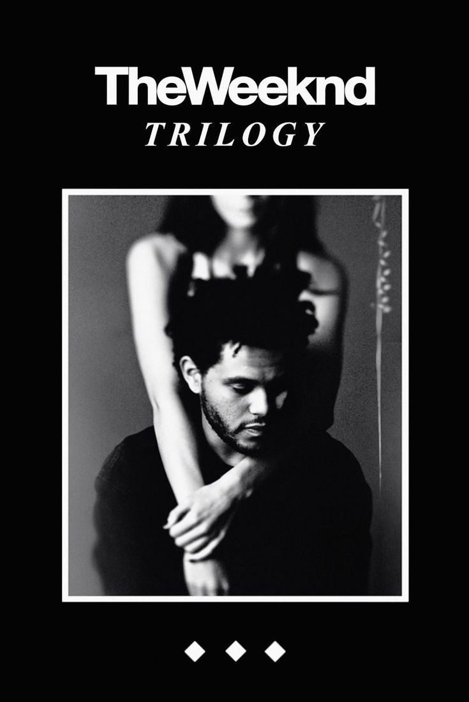
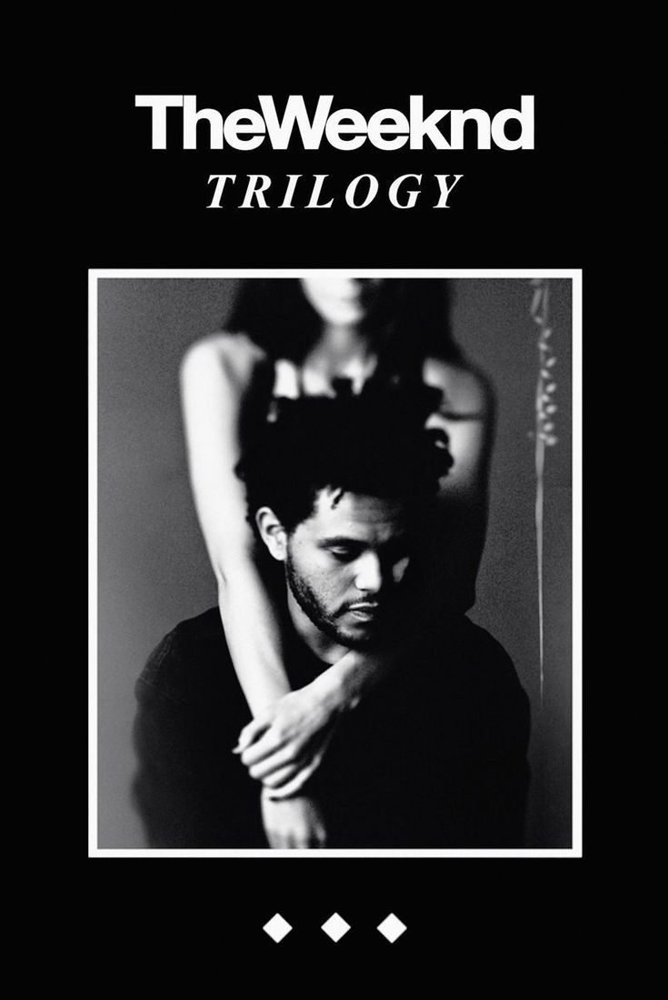

Music
Music is an essential part of my life. My favorite genre is R&B, and my favorite artist is The Weeknd. Whether I'm studying or doing household chores, I always have some R&B playing in the background to keep me focused and relaxed.
Music is an essential part of my life. My favorite genre is R&B, and my favorite artist is The Weeknd. Whether I'm studying or doing household chores, I always have some R&B playing in the background to keep me focused and relaxed.
